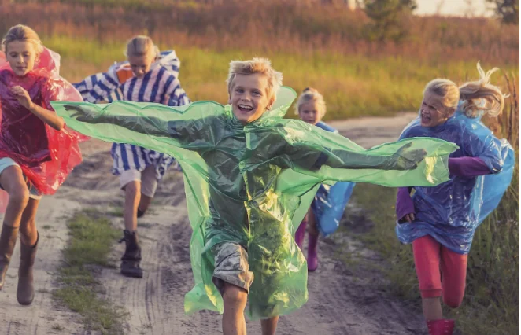
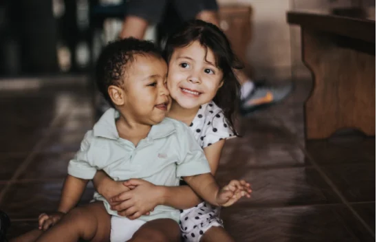

The members of the United Nations Convention on the Rights of the Child have made a a new very important decision that will benefit everybody!
“Play Makes A Better World
The first-ever International Day of Play, to be observed on 11 June 2024, marks a significant milestone in efforts to preserve, promote, and prioritize playing so that all people, especially children, can reap the rewards and thrive to their full potential.
Beyond mere recreation, it is a universal language spoken by people of all ages, transcending national, cultural, and socio-economic boundaries. This shared passion fosters a sense of community and national pride.
It also fosters resilience, creativity, and innovation in individuals. For children in particular, play helps build relationships and improves control, overcome trauma, and problem-solving. It helps children develop the cognitive, physical, creative, social, and emotional skills they need to thrive in a rapidly changing world.
Restricting opportunities for play directly impedes a child's well-being and development. In educational settings, play-based learning has been recognized as an effective approach to engage students actively in the learning process. It helps make learning more enjoyable and relevant, thereby enhancing motivation and retention of information.
Moreover, play is considered to have a positive impact on promoting tolerance, resilience, and facilitating social inclusion, conflict prevention, and peacebuilding. In recognition of this, the United Nations Convention on the Rights of the Child has enshrined play as a fundamental right of every child under Article 31.
The international day creates a unifying moment at global, national, and local levels to elevate the importance of play. It signals a call for policies, training, and funding to get play integrated into education and community settings worldwide.”

Why Is Play Important?
Children learn best through play. Play creates powerful learning opportunities across all areas of development – intellectual, social, emotional and physical. Through play, children learn to forge connections with others, build a wide range of leadership skills, develop resilience, navigate relationships and social challenges as well as conquer their fears. When children play, they feel safe. Children play to make sense of the world around them. More generally, play provides a platform for children to express and develop imagination and creativity, which are key skills critical for the technology-driven and innovative world we live in.
Playful interactions contribute to the well-being and positive mental health of parents, caregivers and children. When humanitarian crises turn a child’s world upside down, it is in play that children can both find safety and respite from adverse experience while also being able to explore and process their experiences with the world. When children are driven from their homes by war, conflict, and displacement, access to nurturing relationships with parents/caregivers and peers are critical buffers from the effects of violence, distress and other adverse experiences. Play comforts and soothes children.
To encourage playful interactions between parents/caregivers and children, governments and other stakeholders need to create an enabling environment.”
A very big thank you to the members of the United Nations Convention on the Rights of the Child Committee. Please click here for some more on play.